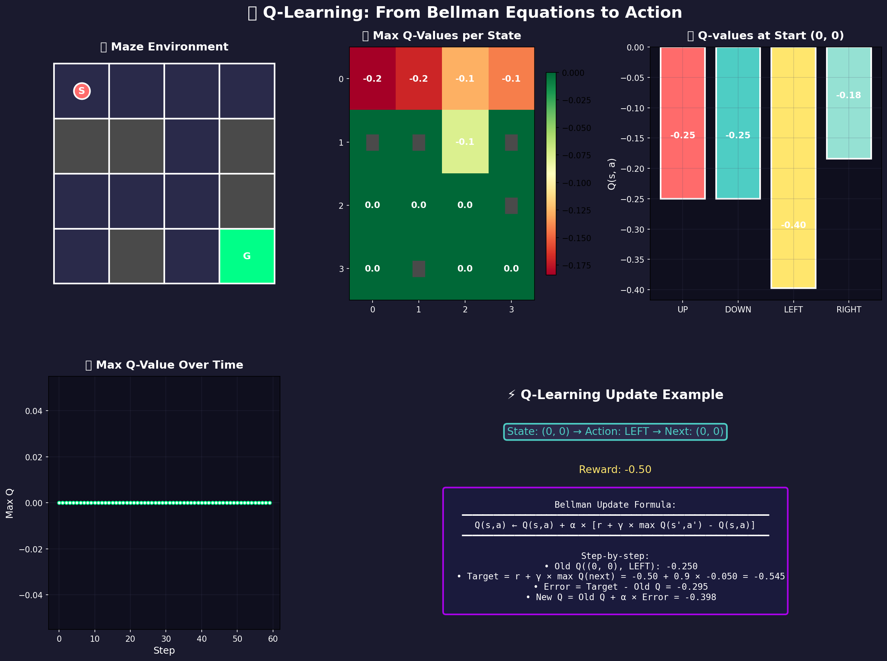
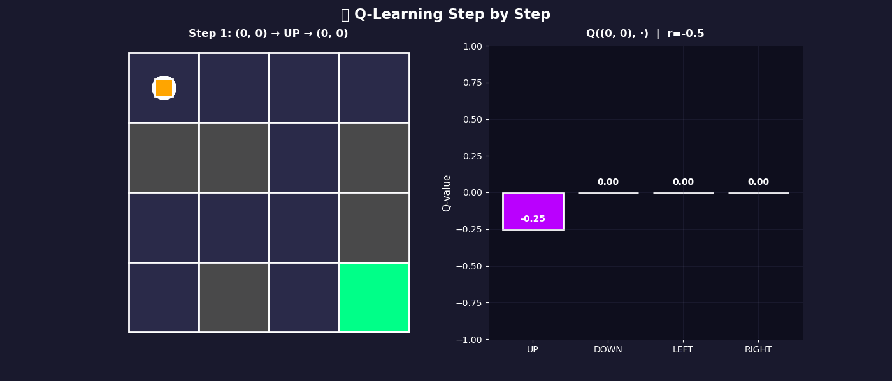
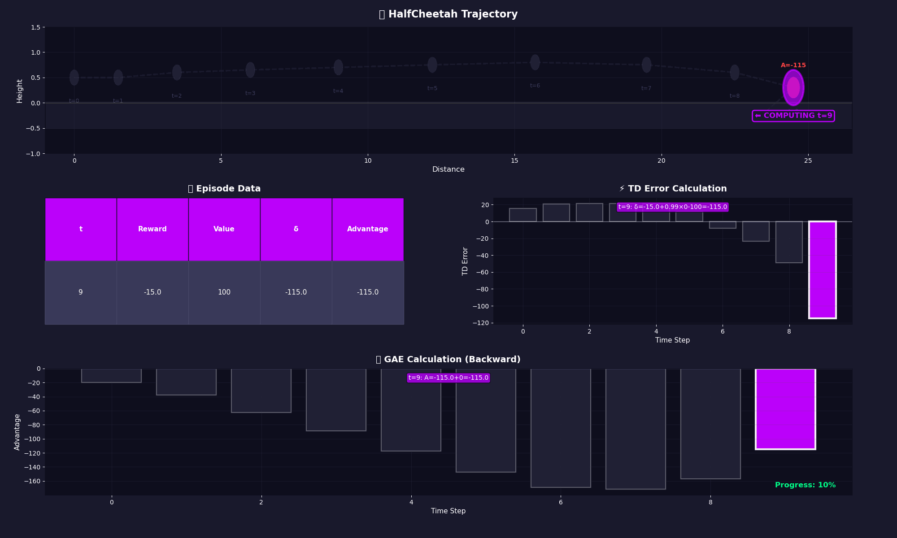

🧠 RL Learning Notes: A Math-Focused Journey¶
From Bellman Equations to Modern Deep RL
Personal notes organizing the key algorithms and their mathematical foundations.
📋 What's Covered¶
| Topic | Details |
|---|---|
| Algorithm Progression | Q-learning → Policy Gradients → Deep RL → Modern Methods |
| Mathematical Foundations | Formulas + intuitive explanations |
| Key Transitions | Why each algorithm was developed |
Topics not covered here
- Advanced exploration methods (UCB, Thompson sampling, intrinsic motivation)
- Multi-agent RL, hierarchical RL, meta-RL
- Formal convergence proofs and regret bounds
- Partial observability (POMDPs)
📚 Recommended Resources¶
For comprehensive RL coverage
- 📖 Sutton & Barto (2018) - The definitive RL textbook
- 🌐 OpenAI Spinning Up - Modern deep RL guide with code
- 🎓 Berkeley CS 285 - Deep RL course (Levine)
📋 Table of Contents¶
- Foundations: MDP & Core Concepts
- Q-Learning (Tabular Methods)
- Policy Gradient & Actor-Critic
- DQN & DDPG (Deep RL)
- PPO (Proximal Policy Optimization)
- Modern Applications
- SAC (Soft Actor-Critic)
- Offline RL
- Model-Based RL
📐 Foundations: MDP & Core Concepts¶
The Basic Vocabulary of Reinforcement Learning
Prerequisites: Linear algebra, probability, basic calculus
🎯 The Markov Decision Process (MDP)¶
One sentence
An MDP defines a sequential decision-making problem where an agent interacts with an environment.
Components¶
An MDP is a tuple \((\mathcal{S}, \mathcal{A}, P, R, \gamma)\):
| Symbol | Name | Description | Example |
|---|---|---|---|
| \(\mathcal{S}\) | State space | All possible situations | Robot joint angles, game pixels |
| \(\mathcal{A}\) | Action space | All possible decisions | Motor torques, button presses |
| \(P(s'\|s,a)\) | Transition dynamics | Probability of next state | Physics simulation, game rules |
| \(R(s,a,s')\) | Reward function | Immediate reward | Score, distance to goal |
| \(\gamma \in [0,1]\) | Discount factor | Future reward weight | 0.99 (care about future) |
The Markov Property¶
Key insight
The future depends only on the current state, not the history.
This means we don't need to remember the entire trajectory to predict what happens next.
The Goal¶
Find a policy \(\pi(a|s)\) that maximizes expected cumulative reward:
⚖️ Exploration vs. Exploitation¶
The dilemma: Should we try new actions (explore) or stick with what works (exploit)?
| Strategy | Description |
|---|---|
| Exploitation | Use current knowledge to get high rewards |
| Exploration | Try new actions to gain information |
| ε-greedy | With probability ε, take random action |
| Entropy bonus | Add \(-\beta \log \pi(a\|s)\) to keep policy spread out |
Why it matters
Without exploration, the agent might never discover better strategies. With too much exploration, it wastes time on bad actions.
Policy, Value, and Q-Functions¶
Policy \(\pi(a|s)\): A distribution over actions given a state.
Value function \(V^\pi(s)\): Expected total reward starting from state \(s\):
Q-function \(Q^\pi(s,a)\): Expected total reward starting from \(s\), taking action \(a\):
Advantage \(A^\pi(s,a)\): How much better is action \(a\) than average?
Interpretation
If \(A^\pi(s,a) > 0\), action \(a\) is better than average; if \(A^\pi(s,a) < 0\), it's worse.
Bellman Equations¶
Bellman equation for \(V^\pi\) (recursive definition):
Intuition
"The value of a state is the expected immediate reward plus the discounted value of the next state."
Bellman optimality equation (for the best possible policy):
Key Takeaway
These equations are the foundation of Q-learning and all value-based methods.
📊 Q-Learning (Tabular Methods)¶
The foundation of value-based RL
The Problem & Solution¶
| Problem | How do we learn without a teacher? |
|---|---|
| Solution | The Bellman Equation |
| Key Idea | Bootstrap from future values |
Visual: Q-Learning in Action¶

Interactive Animation
The animation below shows Q-learning step by step:

The Q-Table Structure¶
The Q-table is essentially a spreadsheet:
- Rows: Every possible state \(s\) (e.g., grid coordinates \((i, j)\))
- Columns: Every possible action \(a\) (Up, Down, Left, Right)
- Cells: The value \(Q(s,a)\) = expected future reward
The Math¶
Bellman optimality (definition of \(Q^*\)):
Q-learning update (how we learn it):
| Parameter | Meaning | Typical Value |
|---|---|---|
| \(\alpha\) | Learning rate | 0.1 |
| \(\gamma\) | Discount factor | 0.99 |
Limitation
Curse of dimensionality. With 7 joints and 100 angles each, the table has \(100^7\) entries. You run out of RAM.
Key Takeaway
Q-learning works for small state spaces but fails with high dimensions. The table has \(|\mathcal{S}| \times |\mathcal{A}|\) entries.
🎭 Policy Gradient & Actor-Critic¶
From learning values to learning policies
Value-Based vs. Policy-Based¶
| Approach | Method | Example |
|---|---|---|
| Value-Based | Learn \(Q(s,a)\), act greedily | Q-learning, DQN |
| Policy-Based | Learn \(\pi_\theta(a\|s)\) directly | REINFORCE, PPO |
REINFORCE (Monte Carlo Policy Gradient)¶
REINFORCE improves a policy by running an episode, looking at total reward from each step (\(G_t\)), and making high-reward actions more likely.
The Return (Reward-to-Go)
So \(G_t\) is the discounted sum of all rewards from step \(t\) until the end.
REINFORCE update:
Intuition
- If \(G_t\) is large → push \(\theta\) to make \(\pi_\theta(a_t|s_t)\) larger
- If \(G_t\) is small → push \(\theta\) to make \(\pi_\theta(a_t|s_t)\) smaller
Variance reduction with baseline:
Why is there a log? (Derivation)
Actor-Critic¶
In one sentence
Actor-Critic = REINFORCE + a Critic network that estimates "how good is this state?" reducing variance and stabilizing learning.
| Component | Role | What it does |
|---|---|---|
| Actor \(\pi_\theta(a\|s)\) | Policy | Chooses actions |
| Critic \(V_\phi(s)\) | Value estimator | Provides baseline |
Advantage calculation (TD error):
Actor update:
Critic update (TD loss):
Key Takeaway
Policy gradients allow us to handle continuous action spaces and learn stochastic policies, unlike value-based methods.
🚀 DQN & DDPG (Deep RL)¶
Neural Networks Meet RL
The Problem & Solution¶
| Problem | Can't store tables for high-dimensional inputs (pixels, joint angles) |
|---|---|
| Solution | Use neural networks to approximate \(Q(s,a)\) |
DQN (Deep Q-Network)¶
In one sentence
DQN is Q-learning with a neural network instead of a table, using a target network and experience replay to stabilize learning.
What is \(Q_\theta(s)\)?
The network takes state \(s\) as input and outputs a Q-value for each action:
TD target (what we want to learn):
Loss function:
Key Innovations
| Innovation | Why it helps |
|---|---|
| Target network \(\theta^-\) | Stabilizes target (updated every \(C\) steps) |
| Experience replay \(\mathcal{D}\) | Breaks temporal correlation, reuses data |
DDPG (Deep Deterministic Policy Gradient)¶
Why DQN doesn't work for robotics
DQN is for discrete actions. Robots need continuous actions (e.g. torque).
Architecture: Actor–Critic
| Component | Output | Purpose |
|---|---|---|
| Actor \(\pi_\phi(s)\) | Continuous action \(a \in \mathbb{R}^d\) | Policy |
| Critic \(Q_\theta(s,a)\) | Q-value | Evaluation |
Critic loss (TD):
Actor gradient (maximize critic):
Key Takeaway
Deep Q-learning combines tabular RL with function approximation. Target networks and experience replay stabilize training.
⚡ PPO (Proximal Policy Optimization)¶
A reliable and widely-used algorithm
The Problem & Solution¶
| Problem | DQN/DDPG are brittle → small learning rate changes cause collapse |
|---|---|
| Solution | Clip the policy update to stay close to old policy |
Probability Ratio¶
Interpretation
- \(r_t = 1\): No change in action probability
- \(r_t > 1\): Action now more likely
- \(r_t < 1\): Action now less likely
The Clipped Surrogate Objective¶
PPO's Key Innovation
| Advantage | Ratio change | Effect |
|---|---|---|
| \(\hat{A}_t > 0\) (good) | \(r_t\) increases | Clipped if \(r_t > 1+\epsilon\) |
| \(\hat{A}_t < 0\) (bad) | \(r_t\) decreases | Clipped if \(r_t < 1-\epsilon\) |
Typically \(\epsilon = 0.2\).
Full PPO Loss¶
| Term | Purpose |
|---|---|
| \(-\mathcal{L}^{\text{CLIP}}_t\) | Policy improvement |
| \(c_1 (V - V^{\text{targ}})^2\) | Value function loss |
| \(-c_2 H(\pi)\) | Entropy bonus (exploration) |
Why entropy?
High entropy = more exploration. The entropy bonus prevents the policy from becoming too deterministic too quickly.
GAE (Generalized Advantage Estimation)¶
Visual: GAE Calculation
The animation below shows how GAE computes advantages backward through time:

GAE formula:
where \(\delta_t = r_t + \gamma V(s_{t+1}) - V(s_t)\) is the TD error.
Key Takeaway
PPO's clipped objective prevents destructive policy updates, enabling multiple epochs on the same batch. This makes it sample-efficient and stable.
🌐 Modern Applications¶
Specialized variants for different domains
🤖 Robotics: Teacher–Student Distillation¶
| Problem | Simulation is perfect, reality is noisy; policies trained in sim often fail in real world |
|---|---|
| Solution | Train Teacher with privileged info, then distill to Student |
1. Teacher (privileged policy) \(\pi_T(a \mid s, p)\)
- Input: state \(s\) + privileged info \(p\) (friction, terrain)
- Trained with PPO in simulation
2. Student (sensorimotor policy) \(\pi_S(a \mid s)\)
- Input: only \(s\) (sensors only, no privileged \(p\))
- Loss: supervised mimicry:
Why this works
The student is forced to infer hidden variables (terrain, friction) from sensor history alone, making it robust to sim-to-real gap.
🖥️ LLMs: GRPO (Group Relative Policy Optimization)¶
| Problem | PPO needs a Critic. For 70B LLM, adding another 70B Critic is infeasible |
|---|---|
| Solution | GRPO — no Critic; use group of samples as baseline |
Process:
- Prompt \(q\) (e.g., "Solve \(x^2 - 5x + 6 = 0\)")
- Sample \(G\) outputs \(\{o_1, \ldots, o_G\}\)
- Score each with reward \(r_i\)
Group advantage:
Key Takeaway
GRPO removes the critic by using group statistics as a baseline. Perfect for LLMs where a separate 70B critic is infeasible.
🔬 SAC (Soft Actor-Critic)¶
Maximum Entropy + Experience Replay
| Problem with PPO | Throws away data after each update (on-policy). Not sample efficient. |
|---|---|
| Solution | Off-policy methods reuse old data via experience replay. |
Paper: Haarnoja et al. (2018)
Maximum entropy objective:
Why high entropy?
More exploration → more robust policies
Components:
| Component | Purpose |
|---|---|
| Twin Q-networks | Combat overestimation |
| Squashed Gaussian policy | Bounded continuous actions |
| Replay buffer | Store and reuse experience |
| Auto temperature | Learn \(\alpha\) automatically |
SAC vs PPO¶
| Aspect | PPO | SAC |
|---|---|---|
| Data reuse | No (on-policy) | Yes (replay buffer) |
| Sample efficiency | Lower | Higher |
| Stability | Very stable | Can diverge |
When to use SAC
Real robotics (expensive samples), continuous control benchmarks.
🏭 Offline RL¶
Learning from Fixed Datasets
| Problem | Online RL requires environment interaction. Can't use in healthcare, driving. |
|---|---|
| Solution | Learn from logged data only (no exploration). |
The Challenge: Extrapolation Error¶
Dataset actions: a₁, a₂, a₃ (Q is accurate here)
Q-learning picks: argmax_a Q(s,a) = a_new (not in dataset!)
Problem: Q(s, a_new) is unreliable → policy exploits errors
Conservative Q-Learning (CQL)¶
Paper: Kumar et al. (2020)
Idea: Penalize Q-values on out-of-distribution actions.
Implicit Q-Learning (IQL)¶
Paper: Kostrikov et al. (2021)
Idea: Avoid the \(\max\) entirely via expectile regression.
Key Takeaway
Offline RL enables learning from logged data (healthcare, driving). CQL and IQL avoid extrapolation errors by being conservative.
🌍 Model-Based RL¶
Learning Dynamics to Plan Ahead
| Problem | Model-free RL is sample inefficient. Learns only from actual experience. |
|---|---|
| Solution | Learn a model of the environment, generate synthetic experience. |
The Model-Based Paradigm¶
Idea: Learn \(\hat{P}(s'|s,a)\) (dynamics model), then:
- Generate imaginary rollouts
- Train policy on real + synthetic data
- Achieve much better sample efficiency
Trade-off
Model error can hurt performance. Use short rollouts (k = 1-5 steps).
MBPO (Model-Based Policy Optimization)¶
Paper: Janner et al. (2019)
Algorithm:
- Train dynamics model: \(\hat{P}(s'|s,a) = \mathcal{N}(\mu_\theta(s,a), \Sigma_\theta(s,a))\)
- Generate k-step rollouts from real states
- Add synthetic transitions to replay buffer
- Train SAC on real + synthetic data
Result: 3-5x fewer samples than SAC alone!
Dreamer: World Models¶
Paper: Hafner et al. (2020)
Idea: For image-based tasks, learn in latent space.
| Component | Function |
|---|---|
| Encoder | \(o_t \to z_t\) |
| Latent dynamics | \(z_{t+1} \sim P(z_{t+1}\|z_t, a_t)\) |
| Decoder | \(z_t \to \hat{o}_t\) |
When to Use Model-Based RL¶
| ✅ Use when | ❌ Don't use when |
|---|---|
| Samples are expensive | Samples are cheap |
| Short-horizon tasks | Long-horizon tasks |
| Smooth dynamics | Discontinuous dynamics |
Key Takeaway
Model-based RL achieves maximum sample efficiency by learning environment dynamics. Short rollouts (MBPO) or latent models (Dreamer) combat model error.
📝 Algorithm Summary¶
| Algorithm | Key Innovation | Best For |
|---|---|---|
| Q-Learning | Bellman equation | Small discrete |
| REINFORCE/AC | Policy gradients | Continuous |
| DQN/DDPG | Neural networks | High-dim states |
| PPO | Clipped objective | General purpose |
| GRPO | Group baseline | LLMs |
| SAC | Max entropy | Sample efficiency |
| CQL/IQL | Conservative Q | Offline data |
| MBPO/Dreamer | Learned dynamics | Max efficiency |
Related Notes
创建日期: 2026年2月15日 00:11:52